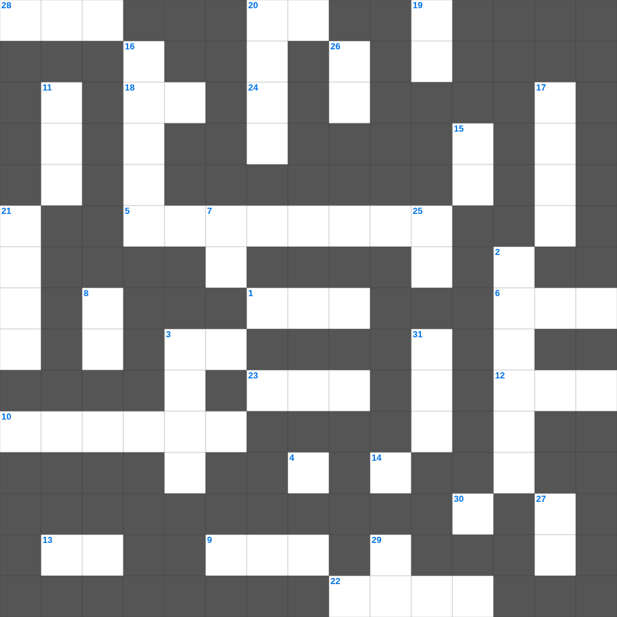

하박국: 오직 의인은 믿음으로
📌 서비스 정의
십자가로세로는 교회 주보와 주일학교에서 사용할 수 있는 성경 기반 가로세로 퍼즐 서비스입니다. 성경 인물, 사건, 핵심 구절을 바탕으로 제작되었습니다. 온라인 풀이 및 인쇄 기능을 제공합니다.
하박국의 말씀을 퀴즈로 배우는 하박국 성경공부 자료입니다. 가로 힌트와 세로 힌트를 보고 35개의 단어를 맞춰보세요. 인쇄도 가능하고 정답 확인도 바로 되니 소그룹 모임이나 가정 예배 시간에도 활용하실 수 있습니다.

📝 가로 힌트
1. 나일강이 피로 변한 첫 번째 재앙
3. 언약궤를 덮고 있는 두 천사 형상
4. 의인의 간구는 역사하는 이것이 큼이니라
5. 베드로가 환상을 본 지붕
6. 하나님이 시내산에서 모세에게 주신 법
9. 예수님의 옷자락을 만져 나은 병
10. 지붕을 뚫고 내려온 병자를 고치신 사건
12. 하나님의 보좌 앞 일곱 등불
13. 베드로가 감옥에서 천사의 도움으로 나옴
18. 사랑, 희락, 이것
20. 바울의 고향
22. 기름 부음 받은 자
23. 사드락과 친구들이 던져진 곳
24. 진리의 허리띠와 평안의 복음의 이것
28. 가룟 유다가 예수님을 넘겨준 신호
📝 세로 힌트
2. 느헤미야의 성벽 재건 기간
3. 베드로가 밤새 그물을 던졌으나 잡지 못했을 때 하신 일
7. 양 떼를 치는 감독자
8. 부활하신 날은 안식 후 이것
11. 성막 마당에 있는 씻는 대야
12. 용서할 때 일흔 번씩 몇 번까지?
14. 번제단 네 모퉁이에 있는 것
15. 하나님의 뜻을 전달하는 것
16. 열매 없는 이것나무를 예수님이 저주하심
16. 예수님이 저주하여 마른 나무
17. 아말렉과의 전쟁에서 모세의 손이 올라가면 이김
19. 데살로니가 사람들이 베레아 사람보다 더 간절히 본 것
20. 삼손이 마지막에 기둥을 무너뜨린 집
21. 예수님이 베드로와 야고보와 요한을 데리고 기도하신 동산
25. 초대 교회에서 구제를 위해 세운 일곱 이것
26. 요셉이 보디발의 아내 유혹을 물리치고 간 곳
27. 세례를 주는 물의 영적 의미
29. 하나님은 모든 사람이 구원을 받으며 이것을 아는 데 이르기를 원하시느니라
30. 세상 죄를 지고 가는 하나님의 어린 이것
31. 아론과 훌이 모세의 팔을 붙든 곳
🧑🏫 교회 교육 자료 활용
이 퍼즐은 주일학교 교재 추천 자료로 활용할 수 있고, 주일학교 주보에 넣기 좋은 분량으로 구성되어 있습니다. 수업용 주일학교 교안에 활동지로 붙이거나, 예배 후 복습용 주일학교 공과교재로 바로 사용할 수 있습니다.
🏷️ 키워드
하박국 성경공부 자료, 하박국, 십자가로세로, 성경퀴즈, 말씀퀴즈, 가로세로퍼즐, 주일학교 교재 추천, 주일학교 주보, 주일학교 교안, 주일학교 공과교재